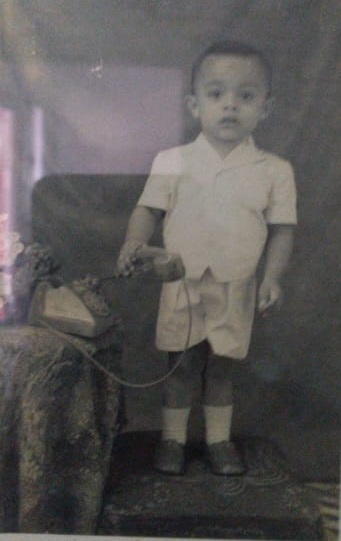
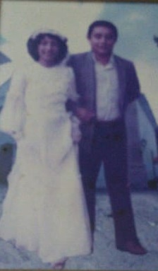
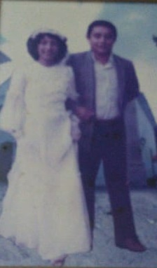
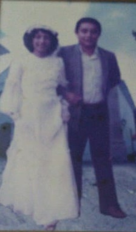

Gualter Santana
Nascido em Manaus dia 24.12.1955, cujo os pais Francisco e Sebastiana e criado aos redores do Centro de Manaus, em momentos de lazer saia em meio ao mato o famoso (sítio do Vovó) com seu pai e irmãos para aventuras inexploradas.
Sua vida é baseada em historias na rua Luiz Antony na qual viveu sua grande infância, mostrando que a família é o principal alicerce na construção do caráter pessoal e profissional de um ser humano.
Vida Profissional
- Sua grande vocação foi ser professor, na sua grande parte do tempo lecionou em escolas como Eduardo Ribeiro, Marcio nery, Tiradentes e etc.
- Mas inicialmente começou seu primeiro trabalho no Souza Arnold na área administrativa, depois perambulou para área bancária onde fez viagens para São Paulo e Brasília.
- Ingressou na faculdade logo jovem, pois não deu continuidade ao nível superior, depois disso começou a vender panelas e até fazer jogo do bicho, o homi era brabo kkkkkkkkk
Laço Matrimonial
- Conheceu dona Oneia logo jovem lá pelas ruas do centro em um aniversário de algum amigo em comum que eles tinham, seu Gualter sempre assanhado se engraçou para o lado de Dona Oneia que veio do Interior e não conhecia nem elevador, porém uma mulher de forte personalidade na qual a vida lhe mostrou com muito sacrificio que temos que lutar com muita garra para alcançar nossos objetivos.

 


Criado a partir de conhecimentos adquiridos pela vida. by Jean Santana